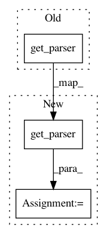

347e68a37421aa2282c31a07559dcb28b7e52e64,src/python/pants/backend/core/tasks/reflect.py,,gen_tasks_options_reference_data,#Any#,463
Before Change
doc_rst = indent_docstring_by_n(authored_task_type.__doc__ or "", 2)
doc_html = rst_to_html(dedent_docstring(authored_task_type.__doc__))
oschi = options.get_parser(task_type.options_scope).get_help_info()
impl = "{0}.{1}".format(authored_task_type.__module__, authored_task_type.__name__)
tasks.append(TemplateData(
impl=impl,
After Change
doc_rst = indent_docstring_by_n(authored_task_type.__doc__ or "", 2)
doc_html = rst_to_html(dedent_docstring(authored_task_type.__doc__))
parser = options.get_parser(task_type.options_scope)
oschi = HelpInfoExtracter.get_option_scope_help_info_from_parser(parser)
impl = "{0}.{1}".format(authored_task_type.__module__, authored_task_type.__name__)
tasks.append(TemplateData(
impl=impl,
doc_html=doc_html,
In pattern: SUPERPATTERN
Frequency: 3
Non-data size: 3
Instances
Project Name: pantsbuild/pants
Commit Name: 347e68a37421aa2282c31a07559dcb28b7e52e64
Time: 2015-08-25
Author: benjyw@gmail.com
File Name: src/python/pants/backend/core/tasks/reflect.py
Class Name:
Method Name: gen_tasks_options_reference_data
Project Name: pantsbuild/pants
Commit Name: 347e68a37421aa2282c31a07559dcb28b7e52e64
Time: 2015-08-25
Author: benjyw@gmail.com
File Name: src/python/pants/backend/core/tasks/reflect.py
Class Name:
Method Name: gen_glopts_reference_data
Project Name: rail-berkeley/softlearning
Commit Name: 6b89f79d0d43a109b3ff12298a28f221b2377b19
Time: 2018-07-29
Author: kristian.hartikainen@gmail.com
File Name: examples/mujoco_all_ray.py
Class Name:
Method Name: main